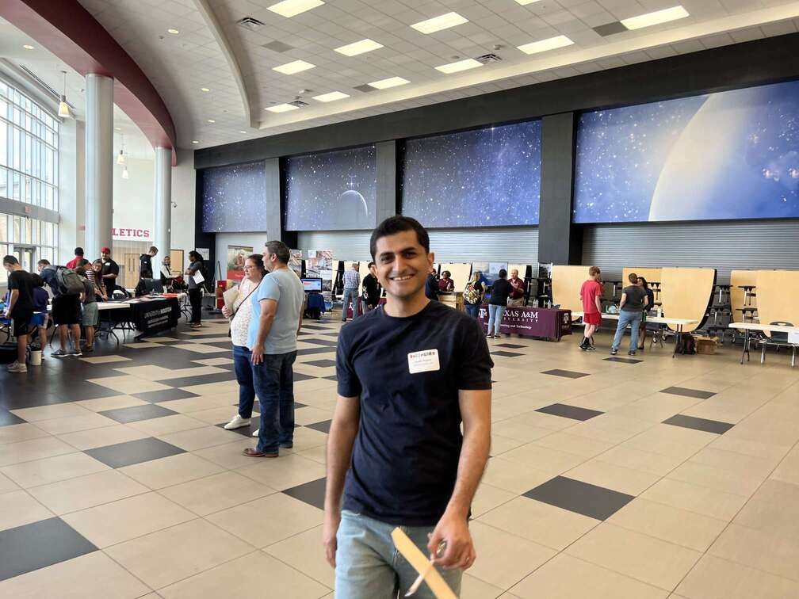

This image is kind of old.
Hello, dear seeker of the truth. I hereby solemnly swear to tell you the truth and nothing but the truth. The biggest sin of them all is lying to yourself; that will kill and suppress the truth inside you.
My name is Shawheen (you can call me Shaw), and I am an independent researcher/thinker. I created this website as an effort to communicate my ideas with people. If you read through my posts, you'll realize I'm not a good fit for mainstream academia or industry; however, I feel my hands are not tied, and I can write and think freely and publish it here. I'm hoping to expand this into a media outlet for all the independent thinkers and philosophers out there—a place outside of cultures, norms, and regulations.
Or want to post something on Architect? Did you love one of my posts, or have a correction? Or do you think I'm totally wrong? Shoot me a message and let's connect! I'll do my best to reach back out to you.
shaw.alipour [at] gmail [dot] com
keywords: about
author: Shaw Alipour
original post date: 06/2026